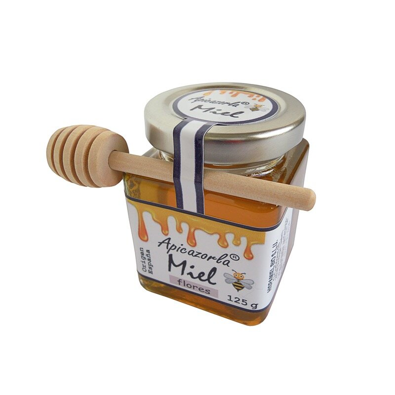

Otros regalos de miel
Tarro de 125 g sin o con cuchara mielera y tarro cerámico de 250 g, ambos con miel de flores.


Seguro que alguno de estos regalos le gustará a sus amigos, familiares o compañeros en la celebración de cualquier evento que organice: bautizo, comunión, boda, comida de empresa,...
Pedidos en:
También puede encontrarlos en otras tiendas de la comarca de Cazorla.